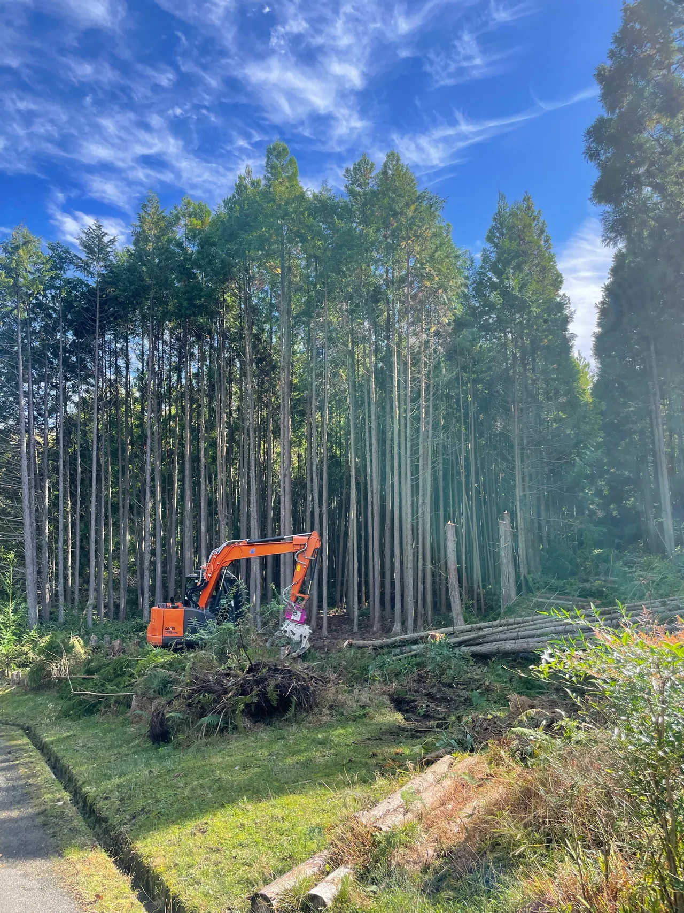

木を切る作業と、切った枝や幹を運び出して処分する作業は、見積上の範囲が異なる場合があります。金額を比べる際は、伐採・搬出・処分・仕上げのどこまで含むかを揃えて確認してください。

「木を切る」だけで終わる見積かを確認
同じ1本の伐採でも、切った木を敷地内に残す条件と、すべて運び出す条件では作業が異なります。見積書に伐採としか書かれていない場合は、枝葉や幹の処分も含むか確認しましょう。切株はどの高さで残るのか、掃き掃除などの片付けはどこまで行うのかも、作業後の認識違いを減らす確認点です。完成時の状態を言葉にして相談することが大切です。
処分量だけでなく、運ぶ経路も費用に関わる
枝葉や幹が多ければ、分けて積む作業や運搬量が増えます。加えて、庭から駐車場所までの距離、階段、門の幅、搬出先まで車両が入れるかといった条件も確認します。道路に面した木と、建物の裏側にある木を本数だけで比べることはできません。写真見積では木全体に加え、搬出経路を送ると費用条件を伝えやすくなります。
幹や枝を敷地に残したい場合
薪などに利用するため幹を残したい場合は、残す場所、長さの希望、枝葉だけを処分するかを最初に伝えてください。利用しやすい形に切り分けたり、指定場所へ移したりする作業は、伐採のみと同じ条件とは限りません。残せば必ず安くなると決めつけず、必要な作業を含めて比較しましょう。積んだ状態の材料を片付け完了の写真と混同しないことも大切です。
自分で処分する前に、受入条件を調べる
自治体や施設の枝木の受入条件は、地域、量、太さ、長さ、排出の経緯などで異なります。家庭のごみとして必ず出せるとは限りません。自分で搬出・処分を考えている場合は、現在の所在地の案内と受入先へ確認してください。業者へ任せる範囲と自分で行う範囲を曖昧にせず、枝葉を残す場合も作業後の置き方まで見積時に相談すると整理しやすくなります。
相談前に揃えたいこと
- 伐採・搬出・処分の内訳と総額
- 切株や地面をどう仕上げるか
- 残してほしい幹・枝と置く場所
- 運搬車両の位置、通路、階段の有無
竜樹伐採では、奈良市を中心に奈良県内の伐採をご相談いただけます。写真と市町村、希望する作業範囲をお送りください。写真による概算で分からない条件は、現地確認の要否も含めてご案内します。
現場の状態によって、対応できる方法や費用は変わります。この記事は個別の現場の診断や正式見積に代わるものではありません。